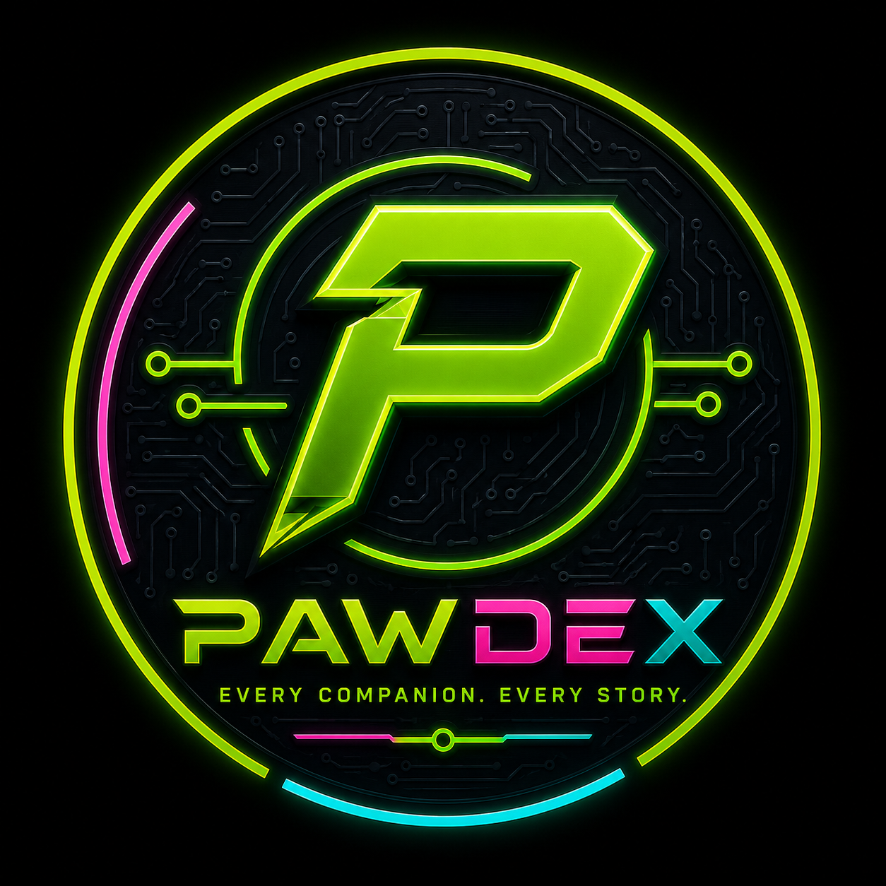

THE DATABASE IS OPENING
Are You Ready To Become An Early PawDex Adopter?
A new way to protect, identify, and celebrate the companions who mean everything to us.
Swipe left or tap the arrow to continue

Restarting the PawDex experience in 10 seconds.
Want to learn more?
● DATABASE ONLINE
Every companion deserves a permanent place in the PawDex Database. Register, identify, and discover companions through lifetime NFC-powered PawDex Entries.
DATABASE PROCESS
NFC or QR opens the companion’s PawDex Entry instantly.
Finders see important companion information and contact options.
Owners can be contacted quickly without subscriptions or locked features.
DATABASE FEATURES
Companion Type: Canine / Guardian
Aspen is the first registered companion in the PawDex Database. Her entry includes identification info, companion traits, owner contact options, medical notes, and a Companion Gallery.
Open Aspen’s PawDex EntryGLOBAL DATABASE
Companion entries will appear across the world as the Database grows.
DATABASE ACCESS
PawDex tags are in development. Follow the first wave and help build the Database.
Follow @pawdex_database